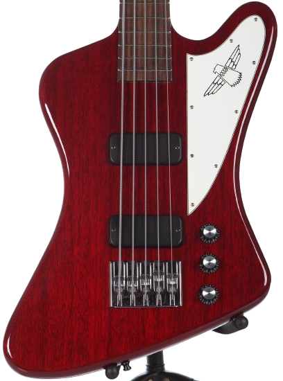
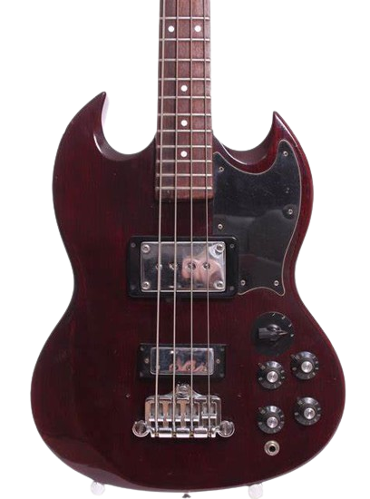
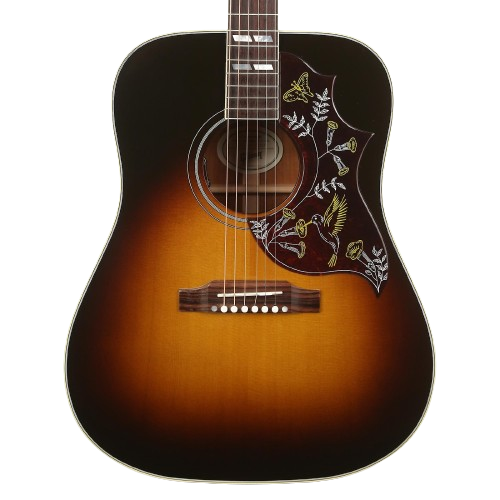
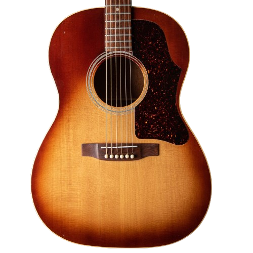
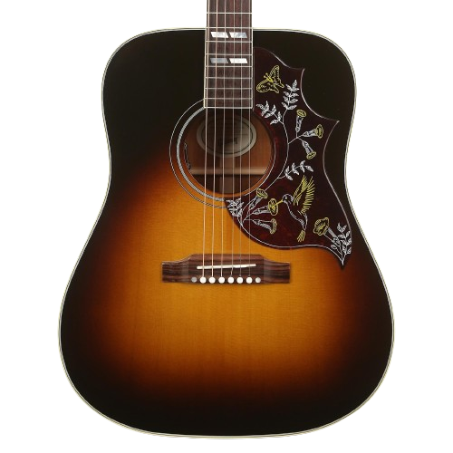
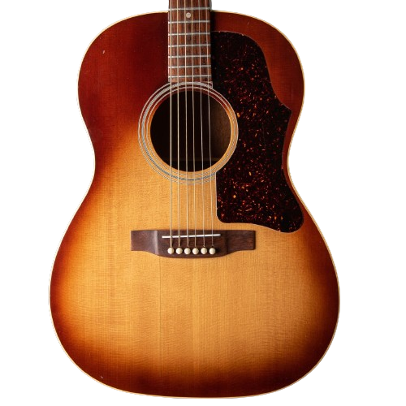

ACERCA DE
¡Soy Gibson! Una leyenda en la música
Más de 130 años de pasión por la música
Desde mi nacimiento en 1894, he sido la voz de artistas icónicos y he impulsado la evolución de la
música a través de mis instrumentos excepcionales. Soy Gibson, la marca de guitarras más legendaria del mundo.
Mis guitarras han sido tocadas por leyendas como B.B. King, Eric Clapton, Jimmy Page, y Slash, y han sido
utilizadas para crear algunos de los momentos más memorables de la historia de la música.
Pero no solo soy una marca de guitarras. Soy una comunidad de músicos, artistas y amantes de la música
que comparten la pasión por el sonido y la creatividad.
Ofrezco una amplia gama de guitarras para todos los niveles de experiencia, desde principiantes hasta
profesionales.
También tengo una amplia gama de accesorios, como amplificadores, pedales y estuches.
Si estás buscando una guitarra que te inspire a crear música increíble, Gibson es la marca para ti.
CATEGORIAS
GUITARRAS
Gibson: Sinónimo de innovación, calidad y sonido legendario, desde 1932 hemos estado a
la vanguardia de las guitarras eléctricas, inspirando a generaciones de músicos a lo largo de
todos los géneros.
Nuestras guitarras eléctricas no solo son instrumentos, son obras de arte, elaboradas
con maderas nobles y componentes de primera clase, ensambladas a mano por expertos luthiers
que capturan la esencia del sonido americano.
Les Paul: La reina indiscutible del rock and roll, famosa por su sustain
incomparable, versatilidad y sonido grueso y potente. Desde Jimmy Page hasta
Slash, la Les Paul ha sido la guitarra predilecta de innumerables leyendas.
Explorer: Una guitarra con un aspecto futurista y un sonido único, perfecta
para músicos que buscan destacarse. Su puente Tune-O-Matic y sus pastillas
humbucker brindan una potencia y sustain excepcionales.
Flying V: Un ícono del rock and roll, la Flying V es conocida por su
diseño audaz y su sonido agresivo. Perfecta para músicos de heavy metal
y hard rock que buscan cortar la mezcla con un tono potente y definido.
BAJOS
Gibson: Desde 1935, hemos estado electrficando el escenario con bajos que
definen el sonido del rock, el funk, el soul y el jazz. Nuestros bajos no
solo son instrumentos, son leyendas, utilizados por algunos de los bajistas
más influyentes de la historia.



Thunderbird: Un bajo icónico con un sonido potente y resonante, perfecto
para cortar la mezcla y hacer temblar el escenario. Su cuerpo robusto y su
mástil cómodo lo convierten en un instrumento ideal para largas sesiones de
interpretación.
EB-3: Con su diseño elegante y moderno, el bajo SG ofrece un sonido brillante
y articulado, perfecto para géneros como el blues, el rock y el metal.
Su cuerpo liviano y cómodo lo convierte en una guitarra ideal para largas
sesiones de interpretación.
Ripper: Un bajo versátil con un sonido único, perfecto para músicos
que buscan experimentar. Su puente Tune-O-Matic y sus pastillas humbucker
brindan una potencia y sustain excepcionales.
ACUSTICAS
En Gibson, nos enorgullecemos de ser pioneros en la creación de guitarras acústicas
que han cautivado a generaciones de músicos. Desde nuestras icónicas J-45 hasta las
versátiles Songwriter, cada instrumento está elaborado con pasión y dedicación,
utilizando maderas de la más alta calidad y técnicas de construcción artesanal
perfeccionadas durante más de un siglo.
 



J-45: Una guitarra acústica de alta calidad que ofrece un sonido rico y resonante.
Está hecha con materiales de primera calidad, incluyendo una tapa de abeto Sitka
macizo, un fondo y aros de palisandro indio macizo, y un mástil de caoba de una
pieza con diapasón de palisandro indio. La J-45 Studio Rosewood también cuenta con
un preamplificador Fishman de alta calidad que le permite enchufarla y tocarla a
través de un amplificador o sistema de PA.
Hummingbird Standard Vintage: Una guitarra acústica icónica que ha sido utilizada
por algunos de los guitarristas más famosos del mundo. Está hecha con materiales
de primera calidad, incluyendo una tapa de abeto Sitka macizo, un fondo y aros de
palisandro indio macizo, y un mástil de caoba de una pieza con diapasón de palisandro
indio. La Hummingbird Standard Vintage Sunburst también cuenta con un puente de palisandro
con clavijas de ébano y pastillas Gibson Humbucker.
LG-2 Antique Natural: Una guitarra acústica de estilo vintage que ofrece un sonido
cálido y clásico. Está hecha con materiales de primera calidad, incluyendo una tapa
de abeto Sitka macizo, un fondo y aros de arce macizo, y un mástil de caoba de una
pieza con diapasón de arce. La 50s LG-2 Antique Natural también cuenta con un puente
de arce con clavijas de níquel y una pastilla Gibson P-90.
AMPLIFICADORES
En Gibson, también hemos dejado nuestra huella en el mundo de la amplificación.
Desde nuestros inicios en los años 30, nuestros amplificadores han sido codiciados
por músicos de todos los géneros por su sonido cálido, detallado y con cuerpo,
además de su construcción robusta y duradera.
GA-40 Falcon: Un renacimiento del clásico GA-19RVT, con 2x12", reverb,
trémolo y ese tono Gibson cálido y detallado.
GA-8T Discoverer: Un tesoro vintage de 1x8" de los años 60, perfecto para blues,
country y rockabilly, con un circuito 5F1 simple y efectivo y un altavoz
Alnico original de 8".
GA-20T Maestro: Un combo compacto de 1x10" con overdrive incorporado, ideal para
practicar y tocar en lugares pequeños, con un altavoz Jensen C-10N y un sonido
versátil.
GUITARRAS
Gibson: Sinónimo de innovación, calidad y sonido legendario, desde 1932 hemos estado a
la vanguardia de las guitarras eléctricas, inspirando a generaciones de músicos a lo largo de
todos los géneros.
Nuestras guitarras eléctricas no solo son instrumentos, son obras de arte, elaboradas
con maderas nobles y componentes de primera clase, ensambladas a mano por expertos luthiers
que capturan la esencia del sonido americano.

Les Paul
La reina indiscutible del rock and roll, famosa por su sustain
incomparable, versatilidad y sonido grueso y potente. Desde Jimmy Page hasta
Slash, la Les Paul ha sido la guitarra predilecta de innumerables leyendas.
Leer Màs

Explorer
Una guitarra con un aspecto futurista y un sonido único, perfecta
para músicos que buscan destacarse. Su puente Tune-O-Matic y sus pastillas
humbucker brindan una potencia y sustain excepcionales.
Leer Màs

Flying V
Un ícono del rock and roll, la Flying V es conocida por su
diseño audaz y su sonido agresivo. Perfecta para músicos de heavy metal
y hard rock que buscan cortar la mezcla con un tono potente y definido.
Leer Màs